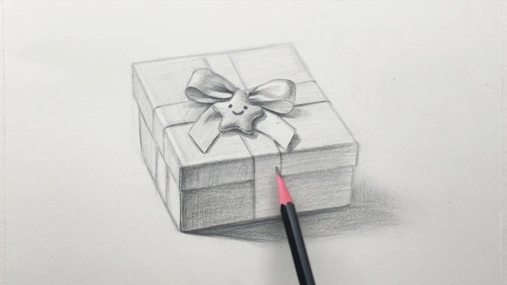

←
FEI TEAMART · GUIDED STUDIO
Gift Box
Journey
Sound on
Resume playback
Ⅱ

YOUR GUIDED STUDIO
Let’s draw a gift box.
One little step at a time.
See the box. Add the details.
We’ll wait for you.
Loading…
Take your time. Your progress follows your account.
YOUR JOURNEY
One step at a time
✕
✕